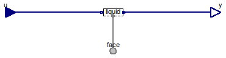

Table of Contents
- User's Guide
- Blocks
- Conditions
- Assemblies
- Regions
- Subregions
- Connectors
- Characteristics
- Units
- Quantities
- BaseClasses
Download
- Latest: FCSys-2.0.zip (**Please check back soon or contact kdavies4 at gmail.com.)

| Name | Description |
|---|---|
| FaceBus | Conditions for a FaceBus connector, with efforts by default |
| FaceBusFlows | Conditions for a FaceBus connector, with flows by default |
| Conditions for a FaceBus connector |

| Type | Name | Default | Description |
|---|---|---|---|
| Phases (click to edit) | |||
| Gas | gas | Gas | |
| Graphite | graphite | Graphite | |
| Ionomer | ionomer | Ionomer | |
| Liquid | liquid | Liquid | |
| Type | Name | Description |
|---|---|---|
| FaceBus | face | Connector for material, momentum, and energy of multiple species |
| RealInputBus | u | Bus of inputs to specify conditions |
| RealOutputBus | y | Output bus of measurements |
model FaceBus "Conditions for a FaceBus connector, with efforts by default" extends FCSys.BaseClasses.Icons.Conditions.Single; Phases.Gas gas "Gas"; Phases.Graphite graphite "Graphite"; Phases.Ionomer ionomer "Ionomer"; Phases.Liquid liquid "Liquid"; Connectors.FaceBus face "Connector for material, momentum, and energy of multiple species"; Connectors.RealInputBus u "Bus of inputs to specify conditions"; Connectors.RealOutputBus y "Output bus of measurements"; equation // Gas connect(gas.face, face.gas); connect(u.gas, gas.u); connect(gas.y, y.gas); // Graphite connect(graphite.face, face.graphite); connect(u.graphite, graphite.u); connect(graphite.y, y.graphite); // Ionomer connect(ionomer.face, face.ionomer); connect(u.ionomer, ionomer.u); connect(ionomer.y, y.ionomer); // Liquid connect(liquid.face, face.liquid); connect(u.liquid, liquid.u); connect(liquid.y, y.liquid); end FaceBus;
If the source of an internal specification is redeclared to a block besides
Modelica.Blocks.Sources.Constant,
then the related condition must be redeclared as well. For example, use:
gas(H2O(redeclare Conditions.ByConnector.Face.Single.Material.Current material(redeclare Modelica.Blocks.Sources.Ramp source)))
rather than simply:
gas(H2O(material(redeclare Modelica.Blocks.Sources.Ramp source)))
Extends from FaceBus (Conditions for a FaceBus connector, with efforts by default).
| Type | Name | Description |
|---|---|---|
| FaceBus | face | Connector for material, momentum, and energy of multiple species |
| RealInputBus | u | Bus of inputs to specify conditions |
| RealOutputBus | y | Output bus of measurements |
model FaceBusFlows "Conditions for a FaceBus connector, with flows by default" extends FaceBus( gas( H2( redeclare replaceable Face.Single.Material.Current material(source(k( start=0))), redeclare replaceable Face.Single.Translational.Force normal(source(k( start=0))), redeclare replaceable Face.Single.Translational.Force following(source( k(start=0))), redeclare replaceable Face.Single.Translational.Force preceding(source( k(start=0))), redeclare replaceable Face.Single.Thermal.HeatRate thermal(source(k( start=0)))), H2O( redeclare replaceable Face.Single.Material.Current material(source(k( start=0))), redeclare replaceable Face.Single.Translational.Force normal(source(k( start=0))), redeclare replaceable Face.Single.Translational.Force following(source( k(start=0))), redeclare replaceable Face.Single.Translational.Force preceding(source( k(start=0))), redeclare replaceable Face.Single.Thermal.HeatRate thermal(source(k( start=0)))), N2( redeclare replaceable Face.Single.Material.Current material(source(k( start=0))), redeclare replaceable Face.Single.Translational.Force normal(source(k( start=0))), redeclare replaceable Face.Single.Translational.Force following(source( k(start=0))), redeclare replaceable Face.Single.Translational.Force preceding(source( k(start=0))), redeclare replaceable Face.Single.Thermal.HeatRate thermal(source(k( start=0)))), O2( redeclare replaceable Face.Single.Material.Current material(source(k( start=0))), redeclare replaceable Face.Single.Translational.Force normal(source(k( start=0))), redeclare replaceable Face.Single.Translational.Force following(source( k(start=0))), redeclare replaceable Face.Single.Translational.Force preceding(source( k(start=0))), redeclare replaceable Face.Single.Thermal.HeatRate thermal(source(k( start=0))))), graphite('C+'( redeclare replaceable Face.Single.Material.Current material(source(k( start=0))), redeclare replaceable Face.Single.Translational.Force normal(source(k( start=0))), redeclare replaceable Face.Single.Translational.Force following(source( k(start=0))), redeclare replaceable Face.Single.Translational.Force preceding(source( k(start=0))), redeclare replaceable Face.Single.Thermal.HeatRate thermal(source(k( start=0)))), 'e-'( redeclare replaceable Face.Single.Material.Current material(source(k( start=0))), redeclare replaceable Face.Single.Translational.Force normal(source(k( start=0))), redeclare replaceable Face.Single.Translational.Force following(source( k(start=0))), redeclare replaceable Face.Single.Translational.Force preceding(source( k(start=0))), redeclare replaceable Face.Single.Thermal.HeatRate thermal(source(k( start=0))))), ionomer( 'C19HF37O5S-'( redeclare replaceable Face.Single.Material.Current material(source(k( start=0))), redeclare replaceable Face.Single.Translational.Force normal(source(k( start=0))), redeclare replaceable Face.Single.Translational.Force following(source( k(start=0))), redeclare replaceable Face.Single.Translational.Force preceding(source( k(start=0))), redeclare replaceable Face.Single.Thermal.HeatRate thermal(source(k( start=0)))), 'H+'( redeclare replaceable Face.Single.Material.Current material(source(k( start=0))), redeclare replaceable Face.Single.Translational.Force normal(source(k( start=0))), redeclare replaceable Face.Single.Translational.Force following(source( k(start=0))), redeclare replaceable Face.Single.Translational.Force preceding(source( k(start=0))), redeclare replaceable Face.Single.Thermal.HeatRate thermal(source(k( start=0)))), H2O( redeclare replaceable Face.Single.Material.Current material(source(k( start=0))), redeclare replaceable Face.Single.Translational.Force normal(source(k( start=0))), redeclare replaceable Face.Single.Translational.Force following(source( k(start=0))), redeclare replaceable Face.Single.Translational.Force preceding(source( k(start=0))), redeclare replaceable Face.Single.Thermal.HeatRate thermal(source(k( start=0))))), liquid(H2O( redeclare replaceable Face.Single.Material.Current material(source(k( start=0))), redeclare replaceable Face.Single.Translational.Force normal(source(k( start=0))), redeclare replaceable Face.Single.Translational.Force following(source( k(start=0))), redeclare replaceable Face.Single.Translational.Force preceding(source( k(start=0))), redeclare replaceable Face.Single.Thermal.HeatRate thermal(source(k( start=0)))))); end FaceBusFlows;